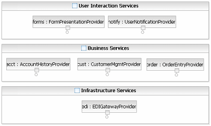
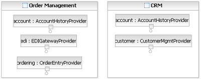
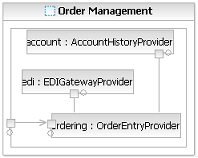
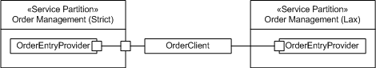

| Концепция: Solution Partitioning |
 |
|
| Связанные элементы |
|---|
IntroductionMuch has been written about the decomposition of software designs into components or subsystems. Much has also been written about the need to understand the deployment topology required by an application early in its lifecycle so that correct architectural decisions can be made. However, there are very few mechanisms identified or used today to help in the logical partitioning of a system during architectural analysis such that decisions regarding the logical topology of a solution and the constraints imposed by non-functional requirements can easily be addressed at the model level before generation of detailed design and implementation work products. The following page outlines a set of simple model elements that allow for this reasoning. While they were developed with service-oriented solutions in mind, these techniques are applicable to any software architecture modeling. Partitions and LayersThe following definitions are taken from the Rational Unified Process (RUP) glossary and contrast the notions of layers and partitions. Interestingly enough the term tier, while common in describing the logical architecture of a solution, does not appear in the RUP glossary.
So, a partition contains a set of elements representing some part of the architecture, but how does the Software Architect slice a model? The answer is deceptively simple: Partitions and layers are organizational constructs; at an architectural level they only represent logical organization. So, what aspects of the organization of a solution do you wish to represent? For example if the model view you are developing is concerned with security then you may wish to represent Trust Zones [JOHNSTON]. For more information see the concepts Layering and Distribution Patterns. What can a partition represent?As we said above, a partition may be used to represent any particular organization concerns the architect may wish to focus on. The following are common views that are constructed in a model. Note that one key aspect of partitions is that they do not imply ownership/containment and so a service may appear in multiple partitions simultaneously. Logical Solution Organization; in this case the partitions represent the logical clustering of elements in a given solution. For example, in a business application we might use partitions to represent the separation into user interaction services, business services, and infrastructure services. Such a view corresponds more to the use of layers in RUP to describe tiers of an application. However, as services are not easily layered in the same way as a component or object-based solution, we use partitions. For more information on these service classifications, see the Concept: Service Portfolio.  High-Level Physical Distribution; in this case partitions may be used to denote local versus remote services, at least when physical distance imposes constraints on the architecture. For example, noting that the customer, account, and order services are hosted in our primary data center and that the Electronic Data Interchange (EDI) gateway is hosted in a secondary data center is important when we also discover that the bandwidth connection between these centers is managed and we have to carefully control communication between these partitions. Business Application/Ownership Boundaries; in this case, partitions are used to represent ownership of services by a business area or by an application area. For example, we might denote that certain services are "owned" by Human Resources, some by Sales, and some by Marketing. Now, while this is not an architectural concern, most projects have to deal with aspects that do not involve technology or architecture but the social and political aspects of the organization. Partitions, in this respect, allow us to see how the interaction between services crosses such boundaries and may impact the development process by requiring stakeholder support for cross-organizational change. In this case the Artifact: Business Systems identified during Business Analysis would form the categories for this model. Business Process Boundaries; in this case we represent end-to-end process areas with partitions, in effect grouping services by the processes they support. The diagram below contrasts the process view (shaded) with the business systems view represented as the vertical bars. It is important in many cases to relate these two views of services already deployed and services planned by a project.  For more information on the connection between process modeling and service identification see the Activity: Existing Asset Analysis. Partitions in the Service ModelIn the Service Model a particular model element, the Service Partition, is used to model logical partitions. The UML 2.0 representation for partitions is based on the use of the Class model element (while some users prefer to use subtypes of Class such as Component or Node where this fit their needs better) and uses composite structure to define the services in a partition and the communication between them. The Service Partition element is shown in the pictures above and may contain not only instances of Service Providers but also instances of other partitions and so may be further composed where appropriate. A service partition may also specify one or more Service Gateways which are named and typed UML 2.0 ports. These ports are typed by Service Specifications in the same way a Service is and thus can be perceived as virtual services specifying the interface to a partition. So, for example it might be appropriate to note that the order management process area is accessed by the same interface to the order entry service provider in the diagram above. We term this promoting the interface from the service out to the partition. The following diagram depicts this and shows how the order entry service provider communicates with the other services in the partition.  One capability of the service gateway is the ability to mediate communication bindings between clients on the outside of a partition and services on the inside. This allows for services to only deal with certain protocol bindings within a partition, for example to use a higher performance or more secure protocol within the boundaries and to expose certain capabilities to clients over a different protocol. For more information see the guideline Service Mediation. Note also that as the partitions are based on the use of UML 2.0 Composite Structures, there is no "containment" relationship between the partition and the services, it is possible, as we have shown above, to represent the same services in multiple partitions or views. If this flexibility is tied to the capability of service gateways, the software architect and designer can cluster services in logical groupings and allow service gateways to expose only relevant interfaces to clients. Specifying Strict PartitionsA strict partition is a partition where all services within the partition are accessed by clients/services outside the partition through service gateways. This implies that the service partition has its own set of interfaces and as such it may be seen as a logical higher-level service provider. This is particularly useful for partitions that represent either business application boundaries or business process boundaries. It also allows for the process represented to identify the interfaces it exposes to the rest of the business and which of the services supporting the process area are made publicly available. The order-management partition above is a strict partition, but the concept of "strictness" can only be assessed by evaluating a partition and is not a property of the model element itself. In the example below the partition on the left may be considered strict because the client (outside the partition) can only communicate with the order entry provider (within the partition) via a gateway. On the other hand the partition shown on the right hand side of the diagram may not be considered as a strict partition as the client communicates directly with the order entry provider inside the partition.  It is important to realize that modeling of strict partitions, even the use of gateways at all, is optional and should be considered simply as a tool that allows for the modeling of explicit communications between partitions (whatever they themselves represent) and for many purposes the additional overhead may not be warranted. References[JOHNSTON] Simon Johnston, Modeling Security Concerns in Service-Oriented Architecture. IBM developerWorks 2004. |
© Copyright IBM Corp. 1987, 2006. Все права защищены.. |